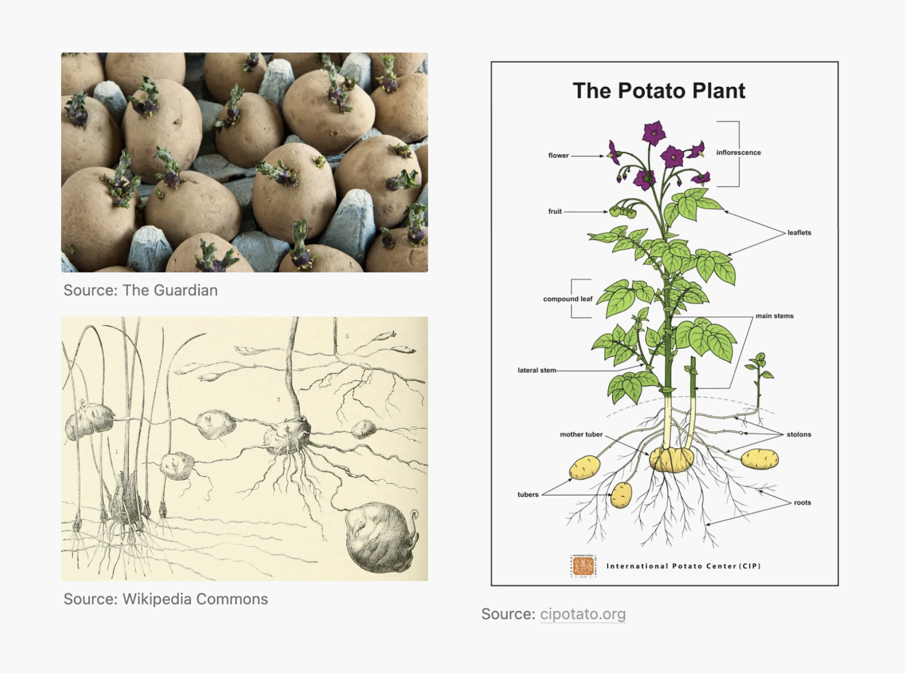

In my previous writing on diffractive intimacy, I described a mode of perception called environmental awareness—a way of sensing in which everything is in motion, indeterminate, and without fixed position or hierarchy. In this awareness, we attune to our relational fields without a separate self.
To understand the architecture of this non-separate self, I want to introduce Deleuze and Guattari’s theory of assemblage, the rhizome, and the ontological plane in which non-separateness exists. Their work gives language to what I observe:
(1) intimacy flourishes as rhizomes, not trees,
(2) intimacy is an assemblage (fluid) while relationship is a stratification (solidification). Making sense of these differences and their ontological plane matters—for articulating is a political position to further co-create them.
a rhizome, an assemblage, potatoes
A tree—with its roots extending below the earth, its body spurting from the soil, sprouting numerous leaves that come and fall—is not a rhizome.
In polar opposite to a rhizome, the tree is a symbol of hierarchy: the roots are the most important part—the entire tree dies when the roots die,
while the leaves are beneficial but replaceable. A company and a cult operate like a tree. Even nation-states, capitalist economies, and many philosophical traditions are structured like a tree: hierarchical, unified, top-down, with clear dichotomies (right/wrong, good/bad).

Then comes potatoes. A potato is a rhizome: it is anti-root, anti-genealogy, resistant to hierarchy and ruptures.
Its growth is not linear—from seed → plant → fruit—but spreads sideways, unpredictably,
regenerates from itself (the tubers).
Each eye on a potato is a node, capable of sprouting into a new shoot.
With no central root—no fixed beginning or end, the potato is a resilient network of potentialities.
What’s more, this network includes more-than-potato, extending into its environment:
a potato is only possible through its assemblage of soil, water, microbes, temperature, sunlight, care, decay, and so on.
Is our interpersonal relationship a rhizome or a tree (1)? The answer (once again) depends on what ontological plane we live in.
entanglement, the plane of intimacy, locked
If a person relates to another through categories like class, intellectual capability, age, gender, religion, or philosophical prowess,
we have a hierarchy—which is how we are heavily socialized to operate in.
Deleuze and Guattari introduce the plane of immanence as the ontological base of non-hierarchical, non-separateness—
a dimension of sensing the world where no linear order exists and no binary holds.
This means no external origin, creator, no object/subject, self/other dichotomies.
Within this plane of immanence, the plane of consistency emerges as the operational surface where assemblages form freely—connections emerge between heterogeneous elements can connect, flow, achieve something without being locked into fixed roles or meanings.
Yet over time, as these flows repeat and stabilize, most start to stratify into rigid, organized hierarchies and identities, forming binary logic, biunivocal relationship, or fascicular system.
Stratification..
Intimacy is an assemblage, while how we communicate about relationship is usually a stratification.
Intimacy—temporary, heterogenous, indeterminate, with no fixed goals or structure—is an assemblage.
Meanwhile, a contemporary committed relationship is usually already stratified:
it solidifies intimacy into rigid hierarchies, organized with rules, fixed roles, identities, and expectations over natural flow and affect.
When intimacy becomes stratified, the aliveness once felt in moments of intimacy deteriorates.
Just as rhizomes are anti-arborescent, intimacy cannot live in fixed identities, hierarchies, and dichotomies.
Thus, although our relationships are constantly stratifying, they need disruptions through intimacy in order to continue.
Photos by Mắt Bét..
A dinner party where people are talking but being bored to death, disconnected, and silently dissociating.
A marriage that faithfully follows the script of husband
and wife
as both partners feel unseen, untouched, and lonely.
A business where members carry out their duties efficiently, never know what they actually care about—each action isolated, no shared stakes.
Failed intimacy is the antithesis of what Christopher Alexander called
The Quality Without a Name, or Aliveness.
To sustain aliveness—intimacy, thus, relationship—I wonder if we might learn from rhizomes:
by understanding what they need and protecting the conditions in which they can thrive.
Deleuze and Guattari proposed six principles that allow rhizomes to sustain themselves without collapsing:
-
1. Connection: There are no privileged entry points. Any point of a rhizome can be connected to any other.
-
2. Heterogeneity: A rhizome thrives on difference and is composed of different kinds of elements.
There’s no need for sameness to communicate or connect.
-
3. Multiplicity: A rhizome is not a unity, it doesn't seek to be coherent. It has no center or fixed identity
but changes as it grows. This defies the idea of a unified nation-state, “discovering your self and destiny”, branding,
or even a core thesis for a book.
-
4. Asignifying Rupture: Rhizomes can break at any point and grow again from that break.
Ruptures don’t need a symbolic meaning to continue — their function is material, not symbolic.
-
5. Cartography: A rhizome is a map, not a tracing. It is local, experimental, and produced through
experience-together and becoming-with, cannot be learned as an outsider.
-
6. Decalcomania: Rhizomes resist copying or reproduction from a blueprint.
Every rhizome is unique—never a decal or stamp of something else.
These 6 principles may be the materials of the architecture of intimacy in a relational, diffractive model.
In the near future, I look forward to discovering real-life applications to further probe whether this is the case.
Until next time!